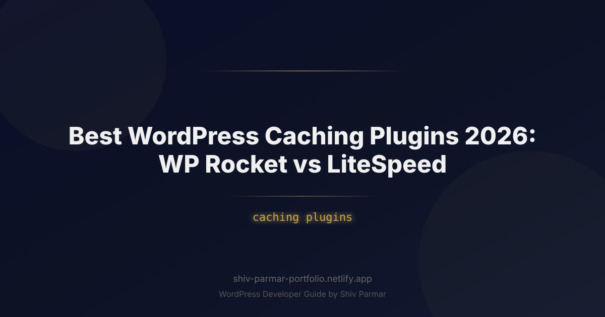

Best WordPress Caching Plugins 2026: WP Rocket vs | Shiv Parmar
Table of Contents
In modern web performance, site speed is no longer just a luxury metric—it directly dictates search engine rankings, conversion rates, and user retention. With Google’s Core Web Vitals evolving beyond simple load markers to prioritize real-world responsiveness metrics like Interaction to Next Paint (INP) alongside Largest Contentful Paint (LCP) and Time to First Byte (TTFB), your caching architecture can make or break your online presence. WordPress continues to power over 40% of the web, yet out-of-the-box, its dynamic PHP execution and database querying structure create bottlenecks that crush scalability.
To eliminate these bottlenecks, two heavyweights dominate performance conversations: WP Rocket and LiteSpeed Cache (LSCache). While both claim the crown among WordPress caching plugins, their philosophies, underlying architectures, and hosting dependencies could not be more divergent. WP Rocket offers a polished, hardware-agnostic solution that maximizes performance on virtually any server environment. Conversely, LiteSpeed operates as a server-integrated juggernaut, leveraging native server-level communication to deliver blistering raw speed when deployed on compatible infrastructure.
Choosing the right tool requires looking past marketing hype and diving into raw architecture, optimization algorithms, and operational requirements. This in-depth guide dissects WP Rocket versus LiteSpeed, comparing their technical footprints, configuration best practices, real-world benchmarks, and edge-case handling so you can engineer an ultra-fast site that dominates search results.
What is WordPress Caching and the WP Rocket vs LiteSpeed Rivalry?
To understand the rivalry between WP Rocket and LiteSpeed, we must first examine how WordPress serves content. WordPress is dynamic by nature. When a visitor hits an un-cached URL, the server initiates a cascading series of actions: the web server routes the request to PHP, PHP executes WordPress core files, queries the MySQL database for posts, theme settings, and plugin data, compiles the response into an HTML document, and finally sends it back to the client browser.
A caching plugin intercepts this costly pipeline. At its most fundamental level, page caching compiles the rendered HTML output on the first request and saves it to disk or memory. Subsequent requests bypass the PHP processor and database queries entirely, serving the pre-rendered HTML file instantly. However, modern caching plugins execute far more than simple HTML caching—they manage CSS/JS minification, delay non-critical scripts, generate Critical CSS, optimize assets, manage Edge Side Includes (ESI) for dynamic content, and communicate directly with Object Caching layers.
The core difference between WP Rocket and LiteSpeed lies in where and how this optimization occurs:
- WP Rocket: Operates primarily at the application level (PHP). It generates static HTML files on the file system and uses server rewrite rules (via
.htaccessor Nginx configurations) to serve these files directly. It is universally compatible across Nginx, Apache, IIS, and proprietary enterprise platforms. Its design ethos centers on radical automation, removing technical guesswork, and refining client-side asset optimization. - LiteSpeed Cache (LSCache): Operates as a plugin companion to the LiteSpeed Web Server (LSWS) or OpenLiteSpeed (OLS). The plugin itself acts as a control center; the actual caching happens directly inside the web server's memory or optimized storage, bypassing the PHP layer entirely without standard file read overhead. It is a server-level cache with application-level granularity, accompanied by dynamic cloud integrations via the QUIC.cloud CDN.
Why Site Speed and Caching Plugins Matter in 2026
The technical standards for web performance have shifted radically. We have moved past an era where generic desktop page-load speeds dictate success. In 2026, web performance is defined by mobile-first rendering, algorithmic user behavior scrutiny, and high-frequency crawling by AI-driven search models.
There are several critical reasons why strategic caching has become essential for high-ranking websites:
- Interaction to Next Paint (INP) Dominance: INP measures overall page responsiveness by tracking user interactions (clicks, taps, keypresses) throughout the entire page lifecycle. Poorly configured plugins that execute heavy JavaScript payloads block the main thread, causing severe INP penalties. Modern caching plugins must carefully balance script delaying and hydration without breaking interactive elements.
- Server Resource Economics and Scalability: Cloud computing and VPS hosting costs scale alongside CPU utilization and RAM allocation. By offloading 95% or more of dynamic database requests to static server-level caches, your operational hosting costs plunge, and your site can effortlessly handle sudden traffic surges without 502/504 gateway timeouts.
- AI Crawler Optimization: AI bots and search engine indexing agents crawl millions of pages continuously. Sites with high Time to First Byte (TTFB) exhaust the bot's crawl budget prematurely, resulting in delayed indexing of new pages and updates. Fast static delivery guarantees rapid crawl turnaround.
- HTTP/3 and QUIC Protocol Integration: Modern browsers leverage multiplexed, zero-RTT connection setups via HTTP/3. Modern caching strategies are no longer limited to the local file system; they must integrate seamlessly with edge networks and support advanced protocol handshakes.
Step-by-Step Guide: Comparing and Configuring WP Rocket vs LiteSpeed
1. Architecture and Server Requirements
Before touching a single setting, your hosting environment dictates the foundation of your choice. WP Rocket is universally deployable, while LiteSpeed delivers its true potential only on specific server engines.
| Feature / Spec | WP Rocket | LiteSpeed Cache (LSCache) |
|---|---|---|
| Server Architecture | Agnostic (Nginx, Apache, LiteSpeed, Caddy) | LiteSpeed Web Server (LSWS) / OpenLiteSpeed |
| Caching Engine | File-based via PHP buffer & web server rewrites | Server-level module (bypasses PHP execution entirely) |
| Dynamic Content Support | Cookie-based cache bypass / AJAX rendering | Edge Side Includes (ESI) built into server core |
| Object Caching Support | Requires 3rd-party plugin (Redis Object Cache, etc.) | Native Redis & Memcached integration built-in |
| Licensing & Pricing | Commercial only (Annual subscription) | Free plugin (Requires LiteSpeed server license or host) |
If your WordPress host runs Nginx natively (such as Kinsta, WP Engine, or custom LemonLDAP/Nginx LEMP stacks), LiteSpeed's server-level optimizations are unavailable. While the LSCache plugin can install on Nginx, it drops down to a rudimentary, inefficient fallback mode. In contrast, running LSCache on an OpenLiteSpeed or LiteSpeed Enterprise box grants access to native memory tags and internal event triggers.
2. Benchmarking Methodology: TTFB, LCP, and INP
When measuring caching plugins, look past synthetic single-run speed tests. High-performance analysis relies on three primary metrics:
- Time to First Byte (TTFB): Measures how long the server takes to process the HTTP request and deliver the first byte of data. An efficient cache provides a TTFB under 100ms for static pages.
- Largest Contentful Paint (LCP): Measures perceived loading speed. The caching plugin must ensure render-blocking resources are minimized so hero images or headings render in under 2.0 seconds.
- Interaction to Next Paint (INP): Evaluates responsiveness to user input. Plugins must not blindly bundle massive JavaScript files that tie up the browser's main thread during parsing.
In high-load stress testing (concurrent visits over 500 requests/sec), LiteSpeed generally outperforms WP Rocket in raw TTFB stability on LiteSpeed hardware because requests never spawn a PHP process. However, on frontend asset optimization (minimizing total blocking time and smoothing LCP on diverse mobile networks), WP Rocket often achieves superior synthetic and field metrics with significantly less manual intervention.
3. Configuring WP Rocket for Maximum Performance
WP Rocket shines by turning complex engineering tasks into toggleable configurations. To extract the best performance from WP Rocket without breaking site features, configure it with the following blueprint:
A. Cache Optimization: Under the Cache tab, enable "Enable caching for mobile devices" and keep "Separate cache files for mobile devices" disabled unless your theme serves distinct, non-responsive mobile templates. Set the Cache Lifespan to 10–24 hours depending on publication frequency.
B. File Optimization (CSS/JS): Under the File Optimization tab:
- Check Minify CSS files.
- Select Optimize CSS Delivery and choose Remove Unused CSS (RUCSS). This leverages WP Rocket's SaaS API to parse stylesheets, isolate critical styling for the viewport, and inline it, dynamically deferring the rest.
- Check Minify JavaScript files.
- Enable Load JavaScript deferred. Keep safe fallback mechanisms enabled for critical libraries like jQuery if older themes require it.
- Enable Delay JavaScript Execution. This is WP Rocket’s signature performance asset for Core Web Vitals. It halts JS execution until user interaction (touch, scroll, click) occurs.
To prevent dynamic page breakages when using Delay JavaScript Execution, whitelist essential tracking and critical interactive scripts using the built-in exclude field:
/jquery(-[0-9.]+)?(\.min)?\.js
gtag
analytics.js
woocommerce
wc-cart-fragmentsC. Nginx Server Configuration (for Nginx users): If you run WP Rocket on a LEMP stack, ensure you bypass PHP completely by configuring Nginx to serve the generated cache files directly via static file lookups:
# Check if cached file exists in WP Rocket cache directory
set $rocket_file $document_root/wp-content/cache/wp-rocket/$http_host/$request_uri/index-https.html;
location / {
try_files $rocket_file $uri $uri/ /index.php?$args;
}
# Serve gzip version if supported
gzip_static on;4. Configuring LiteSpeed Cache (LSCache) and QUIC.cloud
Configuring LiteSpeed Cache is more technically involved due to its granular array of server-level controls. When paired with an OpenLiteSpeed/LiteSpeed Enterprise host and QUIC.cloud (their native CDN), it provides unparalleled execution speed.
A. Server-Level Page Caching: Navigate to LiteSpeed Cache > Cache > Cache. Ensure the following configurations are set:
- Enable Cache: ON
- Cache Mobile: ON (LiteSpeed’s server-level user-agent parser accurately divides mobile and desktop caches at minimal latency).
- Cache REST API, Login Page, and Favicon: ON
- Cache Drop-in: Verify that the
advanced-cache.phpdrop-in is active and points directly to the LiteSpeed server module.
B. ESI (Edge Side Includes) Setup: ESI is LiteSpeed's primary advantage for dynamic websites, such as WooCommerce stores or membership portals. It allows the server to cache the entire page while punching "holes" for dynamic sections (like the shopping cart balance or user greeting), which are rendered separately without invalidating the static wrapper.
<!-- Example of an ESI shortcode block inside LiteSpeed -->
[esi custom_user_greeting ttl="0" cache="private"]C. Page Optimization Rules: Under Page Optimization:
- CSS Settings: Enable CSS Minify, CSS Combine (only if using HTTP/1.1; disable for HTTP/2 and HTTP/3), and set CSS Load External to Asynchronous. Turn on Generate Critical CSS (CCSS) via the QUIC.cloud credit engine.
- JS Settings: Enable JS Minify. Set JS Deferred / Delayed to "Delayed". LiteSpeed provides fine-grained regex matching for tuning delay exclusions.
To tune your .htaccess file for native LiteSpeed caching directives, you can explicitly enforce cache control parameters:
<IfModule LiteSpeed>
CacheEngine on
CacheLookup on
CacheClean /
### Set dynamic public cache expiration to 8 hours ###
CacheMaxAge 28800
### Prevent caching on cart and checkout pages ###
CacheIgnoreQueryString off
CacheKeyPrefix "site_ls_prod"
</IfModule>5. Object Caching: Redis vs. Memcached vs. LiteSpeed Object Cache
Page caching serves static requests to anonymous users, but it cannot optimize logged-in dynamic operations, admin panel performance, or internal database read/write cycles. That is the job of an object cache.
WP Rocket intentionally does not include an object cache. To leverage memory-based database caching with WP Rocket, you must run an external solution such as Redis Object Cache Pro or configure an in-memory Redis instance paired with an auxiliary plugin.
LiteSpeed, by contrast, includes a native interface for both Redis and Memcached. Because LiteSpeed communicates efficiently via persistent socket connections, configuring its native Object Cache tab bypasses query build execution:
# Testing your Redis Socket Connection via CLI
redis-cli -s /var/run/redis/redis-server.sock PING
# Expected response: PONGWithin the LiteSpeed admin console, configure the object cache using the Unix socket path rather than a TCP port (127.0.0.1:6379). Unix sockets avoid TCP/IP loopback overhead, shaving an extra 1.5ms to 4ms off every internal database access call.
Best Practices for Modern WordPress Caching
Deploying high-tier caching plugins without foundational performance practices is like placing a jet engine on a unicycle. To ensure stability and maximize your Core Web Vitals, implement these system-level best practices:
- Prune Cache Directories and Automated Garbage Collection: Large eCommerce sites can generate millions of static HTML files rapidly. Implement server-side automated cron jobs to purge stale or expired cache files directly, rather than relying strictly on heavy WP-Cron triggers during visitor traffic hits.
- Always Inline Critical CSS and Defer Full Stylesheets: Ensure the initial render path receives only the CSS required for the above-the-fold layout. Both WP Rocket and LiteSpeed automate Critical CSS generation—verify that this process compiles completely and does not shift layouts post-load, which degrades Cumulative Layout Shift (CLS).
- Edge Cache Integration (Cloudflare / QUIC.cloud): The fastest server request is the one that never touches your origin host. Use Cloudflare Cache Reserve or Cloudflare Enterprise paired with WP Rocket (using the official Cloudflare integration to clear Edge cache on save), or pair LiteSpeed with QUIC.cloud edge nodes to handle Tier-1 cache delivery directly at global points of presence (PoPs).
- Clean and Optimize Database Revisions: Both plugins offer database optimization panels. Regularly purge post revisions, orphaned term relationships, spam comments, and expired transients. Bloated database tables directly hurt the speed of non-cached dynamic queries.
# Optimized WP-CLI script to automate database cleanup alongside cache regeneration
wp transient delete --expired
wp post delete $(wp post list --post_status='trash' --format=ids) --force
wp db optimize
wp rocket clean --confirm # If using WP Rocket
# OR
wp litespeed-purge all # If using LiteSpeedCommon Mistakes to Avoid
Performance optimization can easily backfire if done incorrectly. Avoid these frequent configuration errors:
- Stacking Multiple Caching Plugins: Running WP Rocket concurrently with LiteSpeed, W3 Total Cache, or Autoptimize will severely degrade performance. Multiple plugins handling minification, HTML buffering, and script delays create race conditions, trigger script breaks, and double the server's CPU overhead. Use one unified caching plugin.
- Combining CSS/JS on HTTP/2 and HTTP/3: In the old days of HTTP/1.1, asset combination was recommended to reduce TCP handshakes. Under HTTP/2 and HTTP/3 multiplexing, bundling files creates massive, blocking files that harm caching efficiency and delay browser parsing. Avoid monolithic CSS/JS bundling unless testing explicitly proves a real benefit for your specific script topology.
- Over-Aggressive JavaScript Delaying: Delaying all JavaScript without excluding user-facing interactivity scripts breaks elements like mobile menus, cookie banners, slider transitions, and add-to-cart buttons. Test your delayed script lists inside an incognito window with throttling enabled to confirm that all interactive elements function properly prior to user engagement.
- Ignoring Heartbeat API Overhead: The WordPress Heartbeat API generates frequent background AJAX calls to
admin-ajax.php. If left unchecked, it consumes massive CPU power and bypasses standard caching layers. Ensure your plugin throttles the Heartbeat API frequency to 60 or 120 seconds, or restricts it entirely except on post edit screens. - Caching Checkout and Customer Account Pages: Dynamically generated, cookie-specific endpoints (such as
/cart/,/checkout/, and/my-account/in WooCommerce) must never be cached publicly. Caching them leads to critical privacy errors, such as displaying one user's personal details or session cart to another visitor. Always verify dynamic path exclusions in your plugin configuration:
# Essential Page Exclusions for eCommerce
/cart/*
/checkout/*
/my-account/*
/addons/*
/?wc-api=*Conclusion
Choosing between WP Rocket and LiteSpeed Cache ultimately comes down to your hosting environment and technical needs. Both rank among the best WordPress caching plugins in 2026, offering robust toolkits to master your Core Web Vitals. If your site is hosted on a LiteSpeed-powered server, LiteSpeed Cache delivers deep, server-level integration at zero cost. On the other hand, WP Rocket remains the undisputed champion for plug-and-play reliability, providing a streamlined interface that dramatically boosts site speed across virtually any host with minimal configuration.
However, simply activating caching plugins rarely solves deeper technical bottlenecks. Achieving peak performance often demands database sanitization, lean script execution, and clean architecture tailored to your specific setup. If you want to transform your website's performance or build a custom web experience, Shiv Parmar is available for WordPress development work worldwide. From complex speed optimizations to full-scale custom WordPress solutions, get the expert support you need to keep your site fast, scalable, and ahead of the competition.